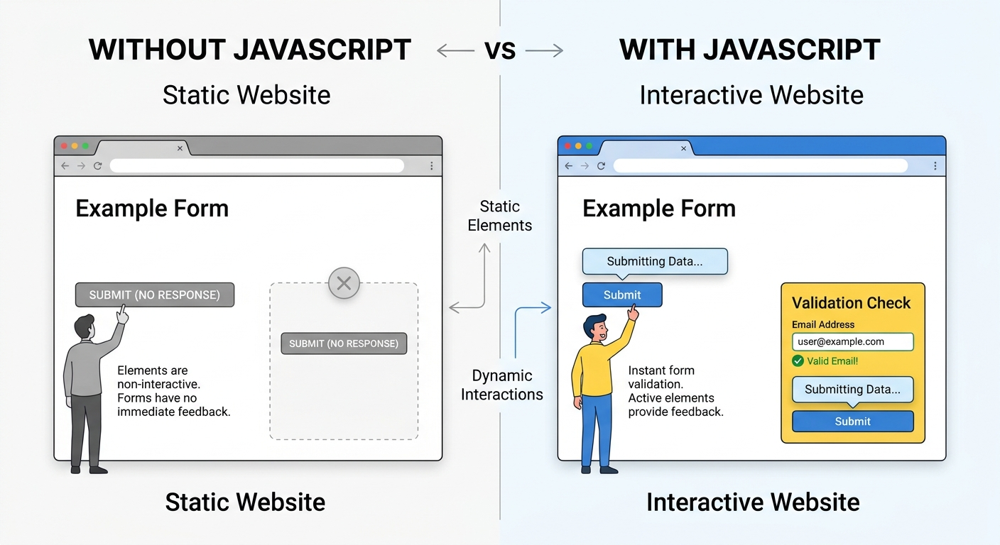

اسم الطالب: يوليوس سامي ميخائيل
الرقم الجامعي: 2501633
تستخدم المواقع JavaScript للتفاعل مع المستخدم من خلال الأحداث (Events) مثل النقر والكتابة والتمرير.
الحدث هو تفاعل يحدث داخل المتصفح، ويساعد DOM لغة JavaScript على الوصول إلى عناصر الصفحة والتعامل معها.
تستخدم addEventListener لربط الأحداث بالعناصر وتنفيذ الأوامر عند حدوثها.
button.addEventListener('click', function() { alert('Hello'); });
يوفر Event Object معلومات عن الحدث، ويمر الحدث بمراحل Capturing وTarget وBubbling.
يساعد Event Delegation على إدارة أحداث عدة عناصر، بينما تنظم Event Loop تنفيذ العمليات غير المتزامنة.
تستخدم Debounce وThrottle لتقليل تكرار الأحداث، مع دعم لوحة المفاتيح وقارئات الشاشة.

| الحدث | وظيفته |
|---|---|
| Click | النقر |
| Keydown | ضغط مفتاح |
| Submit | إرسال نموذج |
يساعد فهم نظام الأحداث على إنشاء مواقع تفاعلية وسريعة وسهلة الاستخدام.